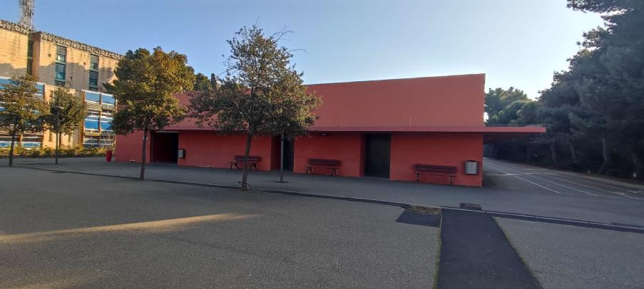
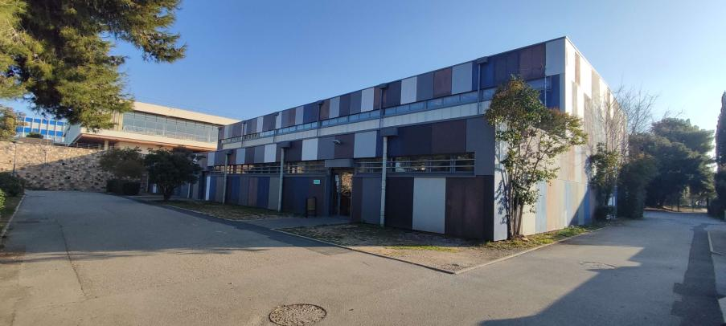
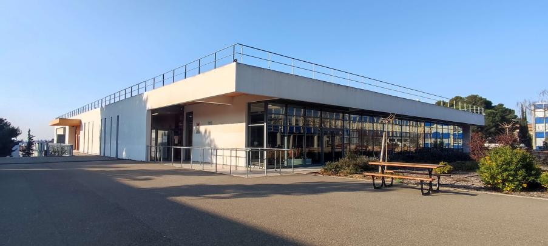
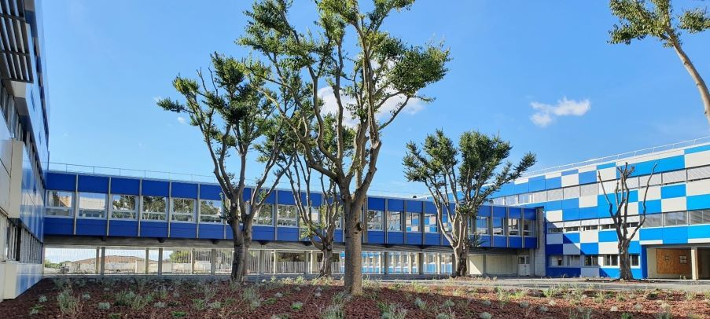
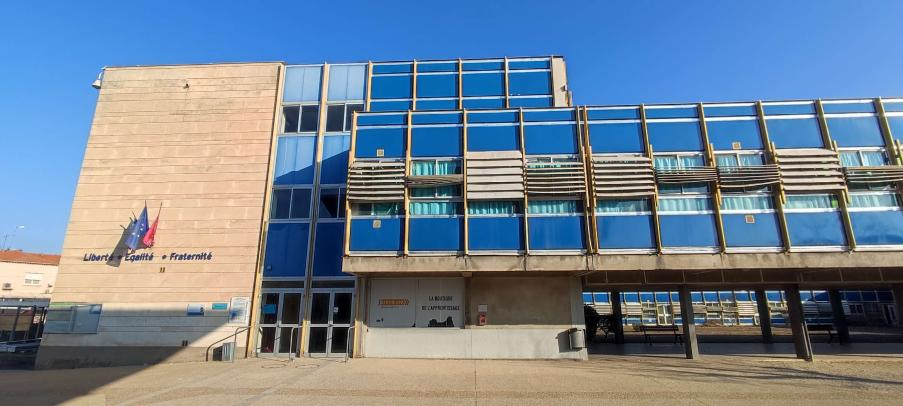
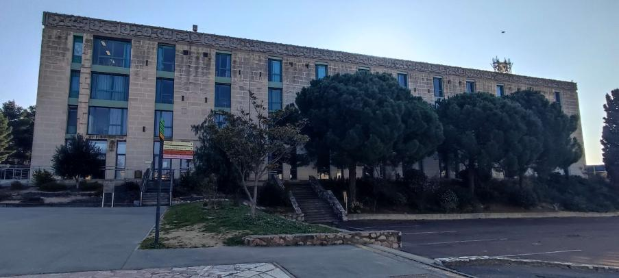

Zone d'activités sportives



Le lycée possède trois gymnases (mais seulement deux qui sont utilisés).
Le premier gymnase qui dispose d'une salle de tennis de table et une salle de sport. Dans cette salle, on peut pratiquer de l'escalade, du badminton, du basket, du volley etc…
Dans le deuxième gymnase, on peut y trouver une salle de musculation et une salle de sport. On peut y pratiquer du badminton, du football et plein d'autres sports.
Restauration
Située près des gymnases, la cantine est séparée en 2 parties. L’une où l’on peut manger des repas équilibrés, et l'autre de la nourriture fast-food.
- 6h45 - 8h (Petit déjeuner)
- 11h30 - 14h* (Déjeuner)
- 18h30 - 19h30 (Dîner)

Cantine
Restaurant d'application

Le restaurant d'application se situe près du bâtiment A et est facilement accessible. Il est tenu par des élèves de plusieurs niveaux, mais toujours escorté par des professeurs.
- 12h15 - 14h* (Déjeuner)
- 19h15 - 21h30**(Dîner)
* Accueil entre 12h15 et 12h30.
** Accueil entre 19h15 et 19h30.
Les bâtiments éducatifs
Bâtiment Industriel

Le bâtiment industriel est un endroit où tous les bac pro industriel et les prépa. ingénieurs ont cours.
Chaque bac professionnel a une salle adaptée à ses besoins.Par exemple, en bac professionnel système numérique nous avons à disposition des ordinateurs et des machines pour les tp.
Bâtiment A

Dans ce bâtiment , nous pouvons trouver des salles de classes de:
- Mathématiques
- Physique chimie
- SVT (Sciences et vie de la terre)
- Arts appliqués
C'est un bâtiment polyvalent qui contient approximativement 60 salles disposées sur le rez de chaussé et 3 étages. Au premier étage, nous avons aussi la vie scolaire. Le CDI fait aussi parti du bâtiment.
Bâtiment B

Le bâtiment B est un lieu où l'on peut trouver les cours de:
- SVT (Sciences et vie de la terre)
- PSE (Prévention santé environnementale)
- Histoire géographie
Dans ce bâtiment on peut aussi retrouver les CAP petite enfance, les aides à la personne et les métiers de la mode… Chaque spécialité a sa classe adapté.
Bâtiment C

Dans ce bâtiment, on peut y trouver tous les bureaux administratifs dont celui du proviseur.
On y retrouve des cours de langue (anglais et espagnol) mais aussi de l'économie gestion et plein d'autres cours (pour des classes de général et de pro).
Dans le bâtiment nous avons la filière du gréta qui est au rez de chaussé puis l’internat du lycée qui prend une grosse partie du bâtiment.